1. Introduction
Citizen science is the involvement of the general public in scientific research – through collecting and analyzing data and helping design projects. This participatory approach not only provides essential information for conservation and management, it connects people to nature and promotes a sense of shared responsibility for the environment
Citizen science is playing an increasingly important role in conservation: it enables scientists to work at a scale that they could never achieve on their own, providing reliable data for monitoring and managing nature and their habitats. The evidence that citizen science projects generate can be used by communities to manage their resources and to guide government policy.
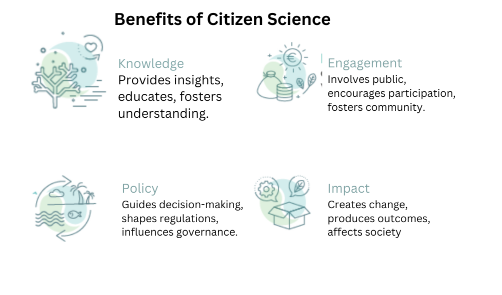
2. Citizen science actions in Africa
There is huge potential for citizen science to improve conservation in Africa. Examples include continent-wide mapping of birds, to monitoring invasive plant species, to assessing ecosystem health. These projects are revealing new information about the state of Africa’s biodiversity providing evidence to governments to make well-informed decisions to address pressing environmental challenges.
In order to maximize the impact of citizen science in Africa, we need skilled managers who can design citizen science projects and analyze and interpret the data.
This practical guide provides you with ideas on how to analyze and interpret results from citizen science data. Using real-life citizen science case studies and data, the booklet aims to simplify statistical concepts and tests, and give you tools to present your data in an accessible and informative way. It also points out pitfalls to avoid with citizen science data. The vision is to build the capacity of citizen science managers to work with civil society organizations and government agencies, so that they are more effective at exploring and using citizen science data to inform conservation management and decisions.
3. STATISTICS
3.1 WHY STATISTICS ARE NECESSARY?
Statistics play a pivotal role by offering a concise and comprehensible overview of collected data. Serving as a crucial tool for data interpretation and visualization, these statistics facilitate effective communication of complex information to both participants and researchers. Beyond aiding in quality control by identifying outliers and errors, summary statistics empower decision-makers with key insights for informed policy formulation in conservation efforts. They enable comparisons, benchmarks, and rigorous scientific validation, fostering a collaborative community engaged in environmental stewardship. Moreover, the use of summary statistics supports resource allocation by pinpointing priority areas for conservation based on quantitative evidence, ensuring that limited resources are directed toward addressing the most pressing environmental challenges. Overall, statistics in citizen science are indispensable for meaningful data analysis, interpretation, and the advancement of informed action in the realm of environmental research and conservation.
4. Descriptive analysis
Descriptive analysis provides a snapshot of the data, summarizing its main features, patterns, and trends. This helps citizen scientists and stakeholders understand the information collected and draw meaningful insights.
We are going to use a real case study of a hypothetical citizen science project related to birdwatching. In this example, citizen scientists collect data on the number of bird species observed in different locations over several months. We’ll use this context to update the visual aids and R code accordingly.
4.1 Summarizing data
In data analysis, summarizing data is a crucial step to extract meaningful insights. R offers a plethora of tools for summarizing and visualizing data. Here, we’ll explore common statistical measures and visualizations, along with pointers to the relevant packages and functions to get you started:
4.1.1 Common Variables:
Mean and Median: Use
mean()andmedian()functions to calculate the mean and median of a numeric variable, respectively.Standard Deviation: The
sd()function calculates the standard deviation, providing a measure of the spread of your data.Quantiles: Employ the
quantile()function to compute specific quantiles, such as quartiles.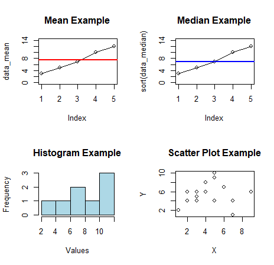
4.1.2 Common Visuals:
Histograms: Visualize the distribution of a numeric variable with the
hist()function. Customize bin width and colors for a clearer representation.Boxplots: Utilize the
boxplot()function to create box-and-whisker plots, offering insights into the central tendency and spread of your data.Scatter Plots: Understand relationships between two numeric variables using the
plot()function, with additional customization for labels and aesthetics.Bar Plots: Represent categorical data with the
barplot()function. Customize colors, labels, and axes to enhance interpretation.Maps: For spatial data, consider packages like
leafletortmapto create interactive and static maps.
4.1.3 Some terms and concepts
Standard Deviation: A measure of how spread out the values in a dataset are from the mean.
Correlation: A measure of the strength and direction of a relationship between two variables.
Confidence Interval: A range of values around a sample statistic within which we are reasonably confident the true population parameter lies.
Probability: The likelihood of an event occurring.
Regression Line: A line that best fits the data points in a scatter plot.
P-value (probability of not observing difference among groups): is the defender of Null-hypothesis (brought to court for investigation).
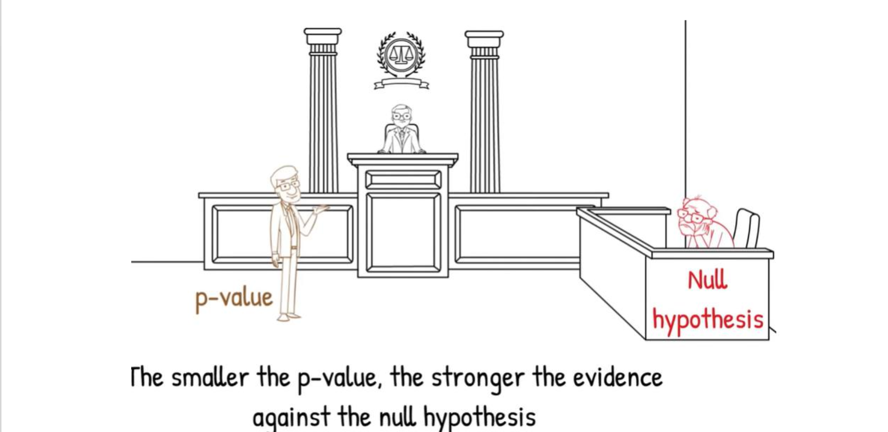
4.1.4 Data types
In citizen science projects, various data types and variables are commonly used to collect and analyze information.

Numerical Data: Quantitative information represented by counting of numbers.
Categorical Data: Qualitative information with distinct categories or groups.
Geospatial Data: Information related to geographic locations.
Temporal Data: Information related to time.
5. Installation of R and R studio
5.1 Introduction to R:
R is a powerful and open-source programming language and software environment designed for statistical computing and data analysis. It provides a comprehensive suite of tools for data manipulation, statistical modeling, visualization, and more.
5.2 R Environment:
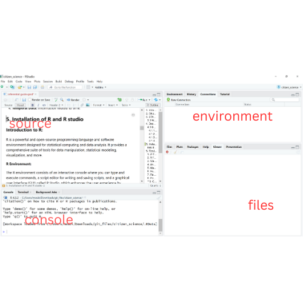
The R environment consists of an interactive console where you can type and execute commands, a script editor for writing and saving scripts, and a graphical user interface (GUI) called R Studio, which enhances the user experience by providing a more user-friendly interface for coding and data analysis.
5.3 Getting Started:
Installation: Start by downloading and installing R from the Comprehensive R Archive Network (CRAN) website (https://cran.r-project.org/).
R Studio: For a more integrated development environment, consider installing R Studio (https://www.rstudio.com/).
5.4 Where to Find Help:
R Documentation: The official R documentation provides detailed information on functions, packages, and usage. Access it at https://www.r-project.org/ under the “Manuals” section.
R Studio Help: R Studio has its own documentation and support resources. You can find helpful information and community discussions on their website: https://support.rstudio.com/.
Online Communities: Engage with the vibrant R community on platforms like Stack Overflow (https://stackoverflow.com/) and the RStudio Community (https://community.rstudio.com/) to seek help and share insights.
Books and Tutorials: Numerous books and online tutorials cater to different skill levels. Resources like R for Data Science by Hadley Wickham and Garrett Grolemund are excellent for beginners.
6. Most Common Statistical Tests used in Citizen Science data A/B Testing
6.1 Z-Test
When to Use: The Z-test is appropriate when comparing the means of two groups with known standard deviations and a large sample size.
Scenario: Citizen scientists have recorded bird observations in two regions of Kenya, Region A and Region B. You want to test if there is a significant difference in the mean counts of a particular bird species between the two regions.
# Example R Code # Assuming 'data' is a data frame with columns 'Region' and 'BirdCount' result <- t.test(BirdCount ~ Region, data = data) # Interpretation cat("T-Test Results:\n") cat("p-value:", result$p.value, "\n") if (result$p.value < 0.05) { cat("There is a significant difference in bird counts between Region A and Region B.\n") } else { cat("No significant difference in bird counts is observed between Region A and Region B.\n") }Interpretation for Decision-makers: Policy makers and conservationists can use the Z-test to assess significant differences in bird counts between two regions. A significant result (p-value < 0.05) suggests policy adjustments may be needed to address variations in bird species abundance. Strategic resource allocation and targeted conservation efforts can be prioritized based on this analysis.
6.2 T-Test (Student’s)
When to Use: The Student’s T-test is suitable for comparing the means of two groups with unknown standard deviations.
Scenario: Citizen scientists have measured the height of a plant species in two different habitats in Africa. You want to assess if there is a significant difference in the mean heights between the habitats.
Interpretation for Decision-makers: For decision-makers in environmental planning, a significant T-test result (p-value < 0.05) indicates a notable difference in plant heights between habitats. This information can guide land-use policies and conservation strategies, ensuring sustainable practices tailored to the unique characteristics of each habitat.
# Example R Code # Assuming 'data' is a data frame with columns 'Habitat' and 'PlantHeight' result <- t.test(PlantHeight ~ Habitat, data = data) # Interpretation cat("Student's T-Test Results:\n") cat("p-value:", result$p.value, "\n") if (result$p.value < 0.05) { cat("There is a significant difference in plant heights between the two habitats.\n") } else { cat("No significant difference in plant heights is observed between the two habitats.\n") }6.3 Welch’s T-Test
When to Use: Use Welch’s T-test when comparing means of two groups with potentially unequal variances and sample sizes.
Scenario: Citizen scientists have documented butterfly species diversity in both urban and rural areas in Africa. You want to test if there is a significant difference in the mean diversity between these two settings.
Interpretation for Decision-makers: Investors and planners can rely on Welch’s T-test to discern significant differences in butterfly diversity between urban and rural areas. A significant result (p-value < 0.05) may prompt targeted investments in biodiversity conservation efforts, acknowledging the unique challenges faced by urban and rural ecosystems.
# Example R Code # Assuming 'data' is a data frame with columns 'Area' and 'ButterflyDiversity' result <- t.test(ButterflyDiversity ~ Area, data = data, var.equal = FALSE) # Interpretation cat("Welch's T-Test Results:\n") cat("p-value:", result$p.value, "\n") if (result$p.value < 0.05) { cat("There is a significant difference in butterfly diversity between urban and rural areas.\n") } else { cat("No significant difference in butterfly diversity is observed between urban and rural areas.\n") }6.4 ANOVA
When to Use: ANOVA is suitable for comparing means across multiple groups (more than two).

Scenario: Citizen scientists have measured the height of a plant species in multiple ecosystems (grassland, forest, and wetland) in Africa. You want to determine if there is a significant difference in the mean heights across these ecosystems.
Interpretation for Decision-makers: Decision-makers involved in land management can use ANOVA to identify significant differences in plant heights across different ecosystems (p-value < 0.05). This information is crucial for tailoring land-use policies, ensuring sustainable practices that account for the diversity of ecosystems within a region.
# Example R Code # Assuming 'data' is a data frame with columns 'Ecosystem' and 'PlantHeight' result <- aov(PlantHeight ~ Ecosystem, data = data) # Interpretation cat("ANOVA Results:\n") cat("p-value:", summary(result)[[1]]$`Pr(>F)`[1], "\n") if (summary(result)[[1]]$`Pr(>F)`[1] < 0.05) { cat("There is a significant difference in plant heights across different ecosystems.\n") } else { cat("No significant difference in plant heights is observed across different ecosystems.\n") }6.5 Mann-Whitney U Test: Comparing Amphibian Abundance in Two Lakes
When to Use: Use the Mann-Whitney U test for comparing medians of two independent groups when assumptions for parametric tests are not met.
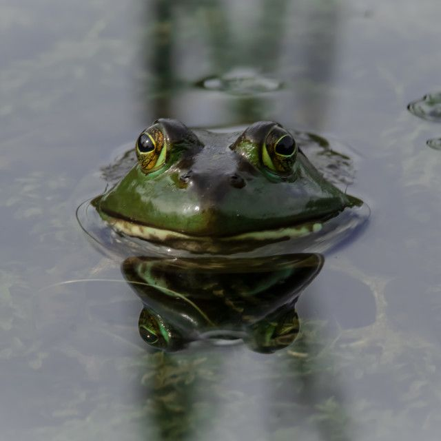
Scenario: Citizen scientists have documented amphibian abundance in two lakes in Kenya. You want to test if there is a significant difference in the median abundance between the lakes.
Interpretation for Decision-makers: For conservation decision-makers, a significant U-test result (p-value < 0.05) suggests a substantial difference in amphibian abundance between lakes. Tailored conservation strategies and habitat management may be required to address the unique ecological conditions of each lake.
# Example R Code # Assuming 'data' is a data frame with columns 'Lake' and 'AmphibianAbundance' result <- wilcox.test(AmphibianAbundance ~ Lake, data = data) # Interpretation cat("Mann-Whitney U Test Results:\n") cat("p-value:", result$p.value, "\n") if (result$p.value < 0.05) { cat("There is a significant difference in amphibian abundance between the two lakes.\n") } else { cat("No significant difference in amphibian abundance is observed between the two lakes.\n") }6.6 Fisher’s Exact Test: Examining Insect Pollination Preferences
When to Use: Fisher’s Exact Test is appropriate for comparing categorical data, especially in small sample sizes.
Scenario: Citizen scientists have recorded the preferred pollination method (insect or wind) for a plant species in Kenya. You want to assess if there is a significant association between the pollination method and the plant species.
Interpretation for Decision-makers: Investors and policy makers can utilize Fisher’s Exact Test to identify significant associations between pollination methods and plant species (p-value < 0.05). This information is valuable for guiding agricultural policies and investments in sustainable farming practices.
# Example R Code # Assuming 'data' is a data frame with columns 'PollinationMethod' and 'PlantSpecies' result <- fisher.test(table(data$PollinationMethod, data$PlantSpecies)) # Interpretation cat("Fisher's Exact Test Results:\n") cat("p-value:", result$p.value, "\n") if (result$p.value < 0.05) { cat("There is a significant association between pollination method and plant species.\n") } else { cat("No significant association is observed between pollination method and plant species.\n") }6.7 Regression Analysis: Predicting Bird Species Richness Based on Environmental Factors
When to Use: Regression analysis is suitable for exploring relationships between a dependent variable and one or more independent variables.
Scenario: Citizen scientists have collected data on bird species richness and environmental factors (temperature, precipitation, and habitat type) in various locations in Africa. You want to assess the relationship between bird species richness and these environmental factors.

Interpretation for Decision-makers: For policy makers and investors in environmental management, a significant overall model (p-value < 0.05) in regression analysis indicates that at least one predictor variable influences bird species richness. Decision-makers can use this information to develop targeted policies and investments aimed at preserving biodiversity in regions influenced by specific environmental factors.
# Example R Code # Assuming 'data' is a data frame with columns 'BirdRichness', 'Temperature', 'Precipitation', and 'HabitatType' result <- lm(BirdRichness ~ Temperature + Precipitation + HabitatType, data = data) # Interpretation cat("Regression Analysis Results:\n") cat("p-value (overall model):", summary(result)$fstatistic[1], "\n") if (summary(result)$fstatistic[1] < 0.05) { cat("The overall model is significant, suggesting that at least one predictor is related to bird species richness.\n") } else { cat("The overall model is not significant, indicating no strong evidence that the predictors are related to bird species richness.\n") }6.8 Pearson’s Chi-squared Test: Analyzing Amphibian Presence in Different Forest Types
When to Use: Use Pearson’s Chi-squared test for assessing the association between two categorical variables.
Scenario: Citizen scientists have documented the presence or absence of a particular amphibian species in different forest types in Kenya. You want to test if there is a significant association between amphibian presence and forest type.

Interpretation for Decision-makers: For conservation decision-makers, a significant Chi-squared result (p-value < 0.05) suggests an association between amphibian presence and forest type. This information can guide land-use planning, helping decision-makers prioritize conservation efforts based on identified associations between species presence and specific forest types.
# Example R Code # Assuming 'data' is a data frame with columns 'AmphibianPresence' and 'ForestType' result <- chisq.test(table(data$AmphibianPresence, data$ForestType)) # Interpretation cat("Pearson's Chi-squared Test Results:\n") cat("p-value:", result$p.value, "\n") if (result$p.value < 0.05) { cat("There is a significant association between amphibian presence and forest type.\n") } else { cat("No significant association is observed between amphibian presence and forest type.\n") }6.9 Chi-square test
Assumption: Since we want to see whether the total number of observed birds in two sites(sululta Plains - Ethiopia and Nakuru National park in Kenya) are the same, we use chi-square.
Null Hypothesis: There is no significant difference in the total number of observed birds in Sululta plains and Nakuru national park.
Alternative Hypothesis: There is a significant difference in the total number of observed birds in Sululta plains and Nakuru national park.
The table below is the contigency table.
# Create a matrix with the specified values my_matrix <- matrix(c(48, 31, 9, 1), nrow = 2, byrow = TRUE) rownames(my_matrix) <- c("Sululta Plains", "Lake Nakuru Np") colnames(my_matrix) <- c("Corvus albus", "Corvus capensis") # Display the contingency table print(my_matrix) # Perform chi-square test chi_square_result <- chisq.test(my_matrix) # Display the chi-square test results print(chi_square_result) # Interpretation cat("\nInterpretation:\n") cat("The chi-square test results indicate whether there is a significant difference in the distribution of the Corvus albus and Corvus Capensis between Sululta and lake Nakuru National park.\n") # Check for statistical significance if (chi_square_result$p.value < 0.05) { cat("The p-value is less than 0.05, suggesting a statistically significant difference.\n") } else { cat("The p-value is greater than 0.05, indicating no statistically significant difference.\n") }Based on the results, there isn’t enough evidence to conclude that there is a significant difference in the total number of observed birds in Sululta plains and Lake Nakuru national park. The observed frequencies align well with what would be expected under the assumption of no association or difference. The p-value, which is above the commonly used significance level of 0.05, suggests that the observed frequencies of birds in both locations are consistent with what would be expected under the assumption of no significant difference.
6.10 Poisson regression
Poisson regression helps quantify the impact of variables on event counts in citizen science, aiding in understanding factors influencing observation rates.
| Pentad | Habitat type | ||||||
|---|---|---|---|---|---|---|---|
| Hornbill presence | Weaverbird presence | Quelea Presence | Altitude | Temp | Rain | ||
| a | 1 | 1 | 0 | Forest | 1200 | 19 | 1300 |
| b | 1 | 1 | 1 | Savannah | 750 | 22 | 600 |
| c | 0 | 1 | 0 | Desert | 200 | 38 | 100 |
| d | 0 | 1 | 0 | ASAL | 300 | 37 | 120 |
An example of a r code using poisson would be #
# Load necessary libraries library(tidyverse) # Generate synthetic citizen science data set.seed(123) n <- 1000 age <- sample(18:80, n, replace = TRUE) education <- sample(c("High School", "Bachelor's", "Master's", "PhD"), n, replace = TRUE, prob = c(0.3, 0.4, 0.2, 0.1)) activity_level <- sample(1:5, n, replace = TRUE) citizen_scientist <- data.frame(Age = age, Education = education, Activity_Level = activity_level) # Generate synthetic response variable (e.g., number of observations) citizen_scientist$Observations <- rpois(n, lambda = 10 + 0.1 * age + 0.3 * activity_level) # Explore the dataset head(citizen_scientist) summary(citizen_scientist) # Fit Poisson regression model poisson_model <- glm(Observations ~ Age + Education + Activity_Level, data = citizen_scientist, family = poisson) # Summarize model summary(poisson_model)The results of the poisson model are as follows:-
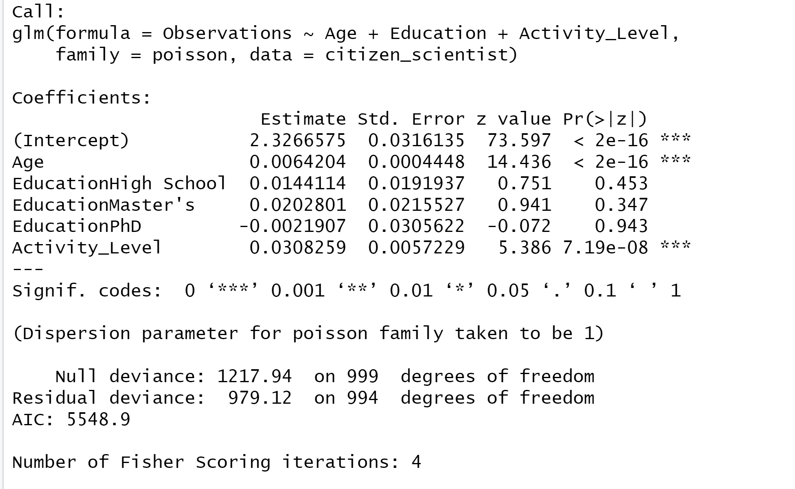
Interpretation
Age: For every one-year increase in age, holding other factors constant, we expect the number of observations to increase by approximately 0.6%. So, for example, if a participant is one year older, we expect them to provide about 0.6% more observations.
Education: Compared to individuals with a high school education, those with a Bachelor’s degree contribute approximately 1.4% more observations, those with a Master’s degree contribute about 2.0% more observations, and those with a PhD contribute less, with about a 0.2% decrease. These figures indicate the percentage increase in observations compared to individuals with a high school education.
Activity Level: Each increase in activity level is associated with approximately a 3.0% increase in the number of observations, all else being equal. So, for instance, if a participant’s activity level increases by one unit, we expect their contributions to increase by about 3.0%.
These findings provide concrete insights into the impact of age, education, and activity level on participation and contribution levels in our citizen science project. They can guide strategic decisions to encourage greater involvement and maximize contributions from different participant groups.
6.11 Binary regression models
Binary logistic regression assesses the likelihood of participation in citizen science activities, illuminating how demographic and behavioral factors influence engagement.
| Pentad | Habitat type | ||||||
|---|---|---|---|---|---|---|---|
| Hornbill count | Weaverbird Count | Quelea Count | Atitude | Temperature | Precipitation | ||
| a | 22 | 23 | 45 | Forest | 1200 | 19 | 1300 |
| b | 34 | 23 | 66 | Savannah | 750 | 22 | 600 |
We interpret binary logistics regression using odds ratio. We look at the percentage odds of a predictor influencing an observation holding other factors constant.
An example of code is:-
# Load necessary libraries library(tidyverse) library(broom) # Generate synthetic citizen science data set.seed(123) n <- 1000 age <- sample(18:80, n, replace = TRUE) education <- sample(c("High School", "Bachelor's", "Master's", "PhD"), n, replace = TRUE, prob = c(0.3, 0.4, 0.2, 0.1)) activity_level <- sample(1:5, n, replace = TRUE) participation <- ifelse(age >= 25 & age <= 60 & education %in% c("Bachelor's", "Master's", "PhD") & activity_level > 3, 1, 0) # Create dataframe citizen_scientist <- data.frame(Age = age, Education = education, Activity_Level = activity_level, Participation = participation) # Explore the dataset head(citizen_scientist) summary(citizen_scientist) # Fit binary logistic regression model logistic_model <- glm(Participation ~ Age + Education + Activity_Level, data = citizen_scientist, family = binomial) # Summarize model summary(logistic_model) # Extract coefficients and tidy up the results tidy_results <- tidy(logistic_model)The results from the binary logistics regression are as follows:-
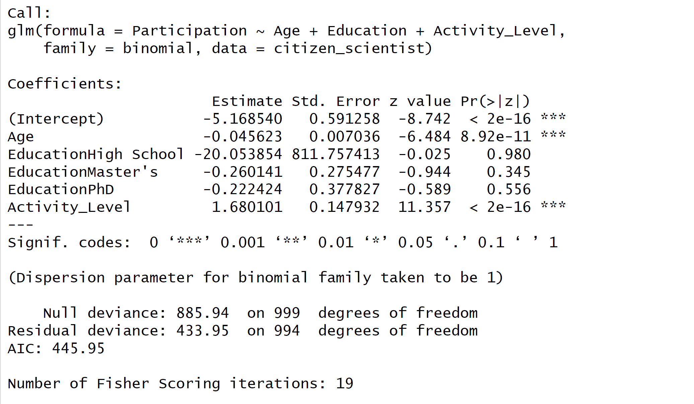
Interpretation
Age: For every one-year increase in age, holding other factors constant, the log-odds of participation decreases by approximately 0.6 %. So, for example, if a participant is one year older, we expect their log-odds of participation to decrease by about 0.6%.
Education: Compared to individuals with a high school education, those with a Bachelor’s degree have approximately exp(-20.05) = 1.96e-09, very very high odds of participation, those with a Master’s degree have exp(-0.26) = 0.77 times high odds, and those with a PhD have exp(-0.22) = 0.802 times higher odds. These figures represent the increase in odds of participation compared to individuals with a high school education.
Activity Level: Each increase in activity level is associated with approximately exp(1.6801) = 5.37 times higher odds of participation, all else being equal. So, for instance, if a participant’s activity level increases by one unit, we expect their odds of participation to increase by about 5.37 times.
7. Statistical Tests: Typical question and Answer examples
Statistical tests serve as powerful tools in extracting meaningful patterns from citizen science data. Let’s explore common scenarios with R code snippets for each case study along with basic explanations that relate to ecological studies using citizen science data from Kenya or Africa, along with the appropriate statistical tests.
Please note that these are simplified examples, and in real-world scenarios, it’s important to adapt the code to the specific characteristics of your data.
7.1 Comparing Species Diversity at Different Sites:
Typical Question: Compare the diversity of species at two or more sites, such as pentads, lakes, habitats, or during different seasons.
Statistical Test: Chi-square test for independence.
Case Study: Analyzing citizen science data on bird species diversity in different Kenyan habitats using a chi-square test. The study aims to understand if there are significant differences in bird species composition among various habitats. Here is a basic example:-
# Case Study: Comparing bird species diversity in different habitats # Generate example data data <- data.frame( Habitat = c("Forest", "Grassland", "Wetland"), Species_A = c(20, 15, 25), Species_B = c(10, 18, 12) ) # Chi-square test for independence chi_result <- chisq.test(data[, c("Species_A", "Species_B")]) # Print the result print(chi_result)This code generates a simple dataset representing bird species counts in different habitats. The chi-square test for independence is then applied to examine whether there are significant differences in species composition among the habitats. The Chi-square test for independence was conducted to examine whether the diversity of bird species differs significantly among different habitats in Kenya. If the p-value is less than 0.05, we can conclude that there is a significant difference in bird species diversity among habitats. On the other hand, if the p-value is greater than 0.05, there is no significant difference in bird species diversity among habitats.
For policy makers and conservationists, a p-value less than 0.05 suggests the need for tailored conservation strategies for different habitats. Decision-makers should prioritize resource allocation and intervention efforts based on the identified variations in bird species diversity, ensuring effective conservation outcomes aligned with the unique characteristics of each habitat.
7.2 Assessing Changes in Population Over Time:
Typical Question: Assess the timing of migration for a bird species or the spread of invasive house crows.
Statistical Test: Time series analysis, such as autoregressive integrated moving average (ARIMA) modeling.
Case Study: Investigating the temporal patterns in the occurrence of migratory birds in Kenya using ARIMA models. The study aims to identify trends, seasonality, and potential shifts in migration timing.
# Generate example time series data time_series_data <- ts(c(5, 8, 10, 15, 12, 20), start = c(2020, 1), frequency = 1) # ARIMA modeling arima_model <- arima(time_series_data, order = c(1, 1, 0)) # Print the model summary print(summary(arima_model))
This code creates a simple time series dataset representing the occurrence of migratory birds over six months. An ARIMA model is fitted to the data to analyze trends and patterns in migration timing. If the p-value is less than 0.05, it indicates a significant trend or seasonality in migratory bird occurrences over time. Conversely, if the p-value is greater than 0.05, no significant temporal patterns are observed in migratory bird occurrences.
For policy makers involved in environmental planning, a significant trend or seasonality in migratory patterns (p-value < 0.05) indicates the necessity to adapt conservation and resource management strategies. Timely interventions and targeted policies can be implemented to address changes in migratory behavior, ensuring the sustained well-being of bird populations in Kenya.
7.3 Assessing Species Distribution in Space:
Sample Question: Identify hotspot areas for a group of birds of prey, waterbirds, or a single species like quelea.
Statistical Test: Spatial analysis techniques, including spatial autocorrelation or hotspot analysis.
Case Study: Utilizing citizen science data to identify hotspot areas for a particular bird species across Kenya. Employ spatial autocorrelation analysis to detect patterns of clustering or dispersion in species distribution.
# Case Study: Identifying hotspot areas for a bird species # Generate example spatial data # Assume you have a spatial dataset with coordinates and species counts # Spatial autocorrelation analysis library(spdep) #install the package spatial_autocorr_result <- moran.test(data$Species_Count, listw = nb2listw(spdep::knn2nb(knearneigh(coordinates)))) print(spatial_autocorr_result)This code assumes you have a spatial dataset with coordinates and species counts. Spatial autocorrelation analysis using Moran’s I is applied to identify potential clustering or dispersion patterns. A p-value less than 0.05 suggests significant spatial clustering or dispersion in bird species distribution. Conversely, a p-value greater than 0.05 indicates no significant spatial patterns in bird species distribution. Policy makers and environmental authorities should use this information to prioritize conservation efforts, designate protected areas, and implement land-use policies that support the identified spatial patterns, contributing to the overall preservation of biodiversity in Kenya.
7.4 Assessing Trends and Correlations:
Sample Question: Does habitat quality affect the number of animals or butterflies?
Statistical Test: Regression analysis, including logistic regression or Poisson regression.

Case Study: Investigating the relationship between habitat quality and the abundance of butterflies in Kenya using logistic regression. The study aims to understand how environmental factors influence butterfly presence.
# Case Study: Investigating the relationship between habitat quality and butterfly abundance # Generate example data habitat_quality <- c(3, 4, 2, 5, 4) butterfly_abundance <- c(10, 15, 8, 18, 14) # Logistic regression logistic_model <- glm(butterfly_abundance ~ habitat_quality, family = binomial) # Print the model summary print(summary(logistic_model))This code generates example data representing habitat quality scores and butterfly abundance. Logistic regression is used to model the relationship between habitat quality and the presence or absence of butterflies. If the p-value is less than 0.05, we can conclude that habitat quality has a significant effect on the presence of butterflies. However, if the p-value is greater than 0.05, habitat quality does not significantly influence butterfly presence. For decision-makers involved in land management, a significant effect (p-value < 0.05) of habitat quality on butterfly presence necessitates considerations in land-use planning. Investments and policies should focus on preserving or enhancing habitats with proven positive effects on butterfly presence, contributing to broader biodiversity conservation goals in Kenya.
These case studies provide practical examples of applying statistical tests to citizen science data, allowing researchers, policy makers and investors to uncover ecological insights and contribute to the understanding of biodiversity dynamics in Kenya and across Africa. As you embark on your analyses, consider the specific characteristics of your data and choose the appropriate statistical test to derive robust conclusions.
8. Case Studies for Citizen Science Data
This section shows how to conduct citizen science analysis using real time data and application of statistical test, regression, and visualizations. The raw data can be accessed from the following DOI and please cite as: GBIF.org (24th January 2017) GBIF Occurrence Download. http://doi.org/10.15468/dl.b04fyt.
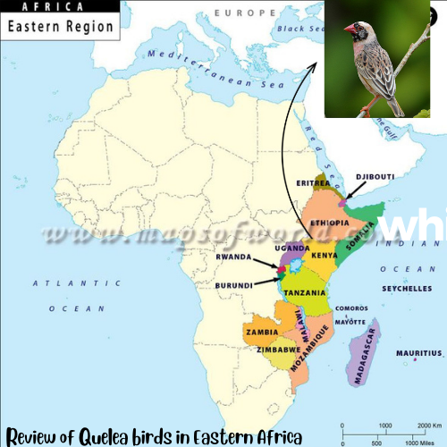
8.1 Quelea birds in Kenya, Uganda and Ethiopia
This section will guide you through various statistical analyses to understand and interpret the observations of Quelea birds over the years. The case study focuses on time series analysis, spatial distribution analysis, comparative analysis, monthly distribution, correlation, linear regression, and a bubble plot showing the distribution of birds across countries.
library(data.table) library(leaflet) library(rgbif) library(broom) library(sf) library(dplyr) quelea <- fread("data/quelea quelea.csv", na.strings = c("", NA)) quelea_data <- quelea %>% filter(scientificName == "Quelea quelea (Linnaeus, 1758)", year %in% c(2014:2022)) %>% dplyr::select(locality, countryCode, stateProvince, individualCount, decimalLatitude, decimalLongitude, eventDate, day, month, year) for_summary <- quelea_data %>% select(individualCount, decimalLatitude, decimalLongitude, eventDate, day, month, year)8.2 Time series analysis
The objective is to examine how the number of Quelea birds observed has changed over the years. Time series analysis helps us understand trends, seasonality, and patterns in data collected over time. We will create a line plot to visualize changes in bird counts from 2020 to 2022.
These are the steps involved:-
Data Preparation: Arrange the data by year and count.
Plotting: Use a line plot to display the bird counts over the years.
Interpretation: Analyze the plot to identify any noticeable trends or patterns.
# Time series plot per country quelea_data %>% group_by(countryCode) %>% mutate(countryCode = case_when( countryCode == "ET" ~ "Ethiopia", countryCode == "KE" ~ "Kenya", countryCode == "UG" ~ "Uganda" )) %>% drop_na(year) %>% count(year) %>% ggplot(aes(year, y=n, color = countryCode)) + geom_line() + expand_limits(y = 0) + # facet_wrap(~ crop, scales = facet_scales) + labs(x = "Year", y = "Number of Observed Quelea birds", title = "Distribution of Quelea birds' presence in East Africa ", color = "Country")
8.3 Spatial Distribution Analysis
The objective is to explore how Quelea bird counts are distributed spatially across the countries. Spatial distribution analysis helps identify regions with high or low bird counts. We’ll create maps to visualize the distribution in 2020, 2021, and 2022.
These are the steps involved:-
Data Preparation: Organize the data by country, year, and count.
Mapping: Use a map to display the spatial distribution of bird counts for each year.
Interpretation: Analyze the maps to identify regions with significant bird populations.
Lets look at the observed number in 2020
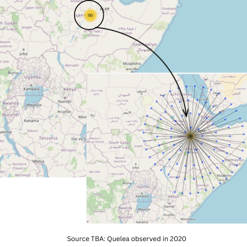
what about in 2021
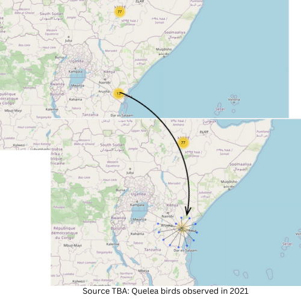
Finally we have 2022
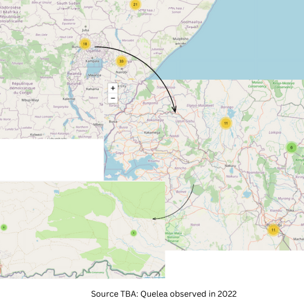
8.4 Comparative Analysis
The main objective was to compare the distribution of Quelea birds across the three countries over the years. Boxplots provide a visual summary of the distribution of a dataset. We’ll use boxplots to compare the bird counts by year for each country.
These are the steps involved:-
Data Preparation: Group the data by country and year.
Boxplot: Create a boxplot for each country to compare the distribution of bird counts.
Interpretation: Analyze the boxplots to understand the variability in bird counts between countries.
8.4.1 Boxplots
ggplot(quelea_data, aes(year, individualCount, fill=year, group = year)) + geom_boxplot(show.legend = FALSE, outlier.shape = NA) + facet_wrap(~countryCode)+ xlim(2015,2023)8.4.2 Correlation
The objective was to explore the relationship between Quelea bird counts and another environmental variable. Correlation measures the strength and direction of a linear relationship between two variables. We’ll calculate the correlation between bird counts and another variable.
These are the steps involved:-
Data Preparation: Choose an environmental variable (e.g., temperature).
Correlation Calculation: Use statistical functions to calculate the correlation coefficient.
Interpretation: Assess the correlation coefficient to determine the strength and direction of the relationship.
8.4.2.1 Correlation Matrix
ggcorrplot::ggcorrplot(cor(round(quelea_data[,c(4:6, 8, 10)],2)))8.4.2.2 Correlation table
library(correlation)
numeric_columns <- c("individualCount", "decimalLatitude", "decimalLongitude", "day", "year") corr_table <- correlation::correlation(quelea_data %>% select(numeric_columns), include_factors = TRUE, method = "auto" ) corr_table8.4.3 Regression (p-value and t-tests)
The objective was to investigate the linear relationship between bird counts and another variable, and test for statistical significance. Linear regression helps model the relationship between two variables. We’ll use a significance test to determine if the relationship is statistically significant.
These are the steps involved:-
Data Preparation: Select another variable (e.g., precipitation).
Linear Regression: Fit a linear regression model and obtain p-values.
Hypothesis Testing: Use a t-test to assess the significance of the regression coefficients.
Interpretation: Evaluate the p-values and t-test results to determine if the relationship is significant.
Regression table
regression_data <- quelea %>% select(individualCount, decimalLatitude, decimalLongitude, eventDate, day, month, year) # Assuming you want to predict 'Count' based on 'Temperature' and 'Precipitation' lm_model <- lm(individualCount ~ ., data = regression_data) tidy(lm_model)8.4.4 Bubble plot
The objective was to visualize the distribution of Quelea birds across countries with different bubble sizes representing bird counts. A bubble plot combines a map with additional information represented by varying bubble sizes.
These are the steps involved:-
Data Preparation: Organize data by country, latitude, longitude, and bird count.
Mapping: Use a map to represent the countries.
Bubble Size: Adjust bubble sizes according to bird counts.
Interpretation: Analyze the plot to identify countries with higher bird counts.
Bubble plot
## Bubble plot library(maps) # Get Kenya map boundaries # kenya_map <- map("world", regions = "Kenya", plot = FALSE) countries_map <- map("world", regions = c("Kenya", "Uganda", "Ethiopia"), plot = FALSE) ea_shapefile <- sf::read_sf("ESA_admin1_region.shp") ggplot() + geom_sf(data = ea_shapefile) + geom_point(data = quelea_data, aes(x = decimalLongitude, y = decimalLatitude, size = individualCount))+ labs(title = "Bubble Chart of Quelea Bird Counts", x = "Longitude", y = "Latitude", size = "Count")+ theme(legend.position = "none")